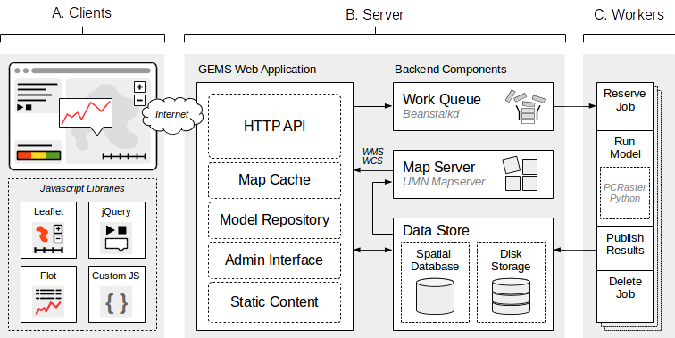
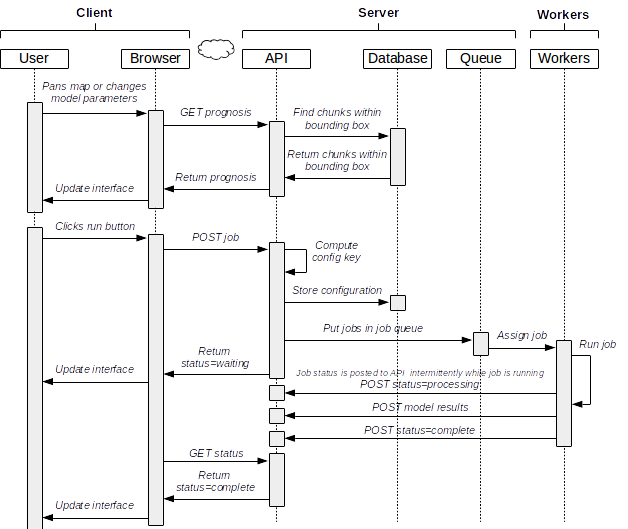

Overview¶
This chapter contains a birds-eye view of the GEMS application. It is intended to give a tech-savvy user a basic understanding of how the system and the different components work. You can refer to the chapters on the web application, modeller and processing for more detailed information.
The application consists of three main parts:
- The web client (GEMS modeller)
- The web application (GEMS web application)
- The processing backend (GEMS processor)
The web client is generally referred to as the GEMS modeller, and consists of the JavaScript application that communicates with the API to post processing jobs.
The web application encompasses various other components: the server-side Python application (API, admin interface, etc), UMN mapserver, the beanstalkd work queue, and a Postgresql/PostGIS database.
The processing backend is a script which monitors the work queue, reserving and processing jobs as they become available. After processing is completed, the resulting maps are posted back to the API so that the web client can load them in the mapping interface.
Database¶
The data model in the GEMS application is defined in the ~/webapp/models.py file. GEMS uses the SQLAlchemy library to define the data model using Python classes. SQLAlchemy maps the object classes to database tables, and the object’s properties to fields/columns in the respective table. This means that we don’t have to write our own SQL queries or create the appropriate tables ourselves, but rather we can load and modify Python objects via SQLAlchemy. Changes to these objects can then be commited back to the database, and we can use the objects properties to display information about them in templates or other parts of the application. GEMS uses a PostgreSQL database with the PostGIS extension. To be able to use spatial queries (i.e. the PostGIS funcationality) in SQLAlchemy, the GeoAlchemy2 package is used.
Message Queue¶
The message queue (also known as work queue, or job queue) uses beanstalkd, a simple and fast work queue written in C. Beanstalkd uses a concept of ‘tubes’ in which jobs can be placed. Other scripts (workers) can then monitor a tube and a receive jobs from them. Any jobs which are scheduled within the GEMS application are placed in the gemsjobs tube and processed by workers which are connected to beanstalkd and are watching the gemsjobs tube. Jobs are posted to the beanstalk queue as pickled strings.
Data Model¶
The data model maps and stores certain concepts to database tables and python objects. They are explained briefly here, and in more detail in the GEMS Web Application chapter.
Discretization¶
A discretization is also known as a chunkscheme, a naming convention left over from the old GEMS application. The GEMS application needs to divide the world up into smaller managable sections so that the geographical extent of the model run can be constrained. After all, running a model on a grid with millions of rows and columns would be incredibly slow as well as contain a lot of area which the user may not be interested in. We therefore divide the world up into small chunks that represent the model area. These chunks can be any shape: for example 1 by 1 degree tiles, river catchments, countries, provinces, or some other arbitrary shape. A certain collection of these chunks is called a “Discretization”. The following discretizations are created by default:
| Name | Resolution | Number of chunks |
|---|---|---|
| world_onedegree_100m | 100m | 13901 |
| frankrijk_veldwerkgebied_100m | 100m | 43 |
| nederland_5m | 5m | 2217 |
| european_catchments_100m | 100m | ? |
Chunk¶
A chunk is a single modelling unit which must be part of a Discretization (chunkscheme). For example, the world_onedegree_100m discretization contains nearly 14000 chunks dispersed all over the world. When a model run is requested, the system checks which chunks in the desired chunkscheme fall within the requested model run extent. A modelling job (with custom parameters) is then started for each of the individual chunks.
Map¶
A map is a single ouput (attribute) map created by a model. A map must have:
- A timestamp (the time which it is simulating)
- A geometry belonging to a specific chunk (representing the geographic location of this map)
- An attribute name to identify which environmental attribute it represents (snow depth, erosion, rainfall)
- A configuration key which represents the configuration parameters that the model was run with. A different set of parameters will result in a different code, and therefore a different map.
Model¶
A model represents an environmental simulation model. All of the models input parameters, code, reporting information, and metadata, are not strictly part of the schema. They are defined inside the model code and copied to JSON database fields when the model code is updated.
ModelConfiguration¶
A modelconfiguration represents a single set of configuration parameters for a model. All model configurations are identifiable by a unique config key. This config key is a hash of a sorted list of parameters. Therefore, every time a model is run with the same parameter set, the config key should also be the same for all those runs.
Job¶
A job is created every time a modelling request is received. Imagine a user submits a job to run model X on a particular area. The job is then assigned a unique ID, a model configuration, and a list of chunks that need to be completed for this model run. The job describes the entire modelling job, even though it technically consists of several small chunks, each of which are processed independently by a worker machine. These smaller jobs encapsuled in a large job are called JobChunks.
JobChunk¶
A jobchunks is usually one of many in a particular Job.
User¶
A user describes a user in the GEMS system. The system also has UserRoles and Role data models, but these are used more internally to define types of users.
GEMS Web Application¶
The GEMS web application is built using the Flask Microframework, a lightweight web application framework for Python. Flask uses the concept of Blueprints to separate logical sections of a web application, allowing you to store all the views related to a specific blueprint in its own directory. The following blueprints are used in the GEMS application:
| Name | Description |
|---|---|
| admin | The admin blueprint contains the administrator functionality of the website. This includes code for adding new models, discretizations, and viewing the jobs submitted by regular users. |
| api | The api blueprint handles all the API functionality, such as posting jobs, requesting statuses. |
| data | The data blueprint is a proxy for the mapserver server. It requests map tiles from the backend mapserver, caches the map tiles. Downloading data files will also be implemented in the data blueprint. |
| install | The install blueprint is only used during the installation of the web application. After the webapp has been installed, trying to navigate to the install blueprint should give an error. |
| modeller | The modeller blueprint is used for serving the javascript application which is the modelling front end of the application. This is where users pan to a certain area, run models, and load output maps in the interactive map. |
| site | The site blueprint serves the GEMS site itself, such as the login page, ‘about this project’ pages, that sort of stuff. |
| status | The status blueprint serves a status page. |
The templates and static directories do not contain blueprints. The templates directory contains all the templates, with one subdirectory for each of the blueprints described above. The static directory contains all the static content for the web application (images, style sheets, javascripts, etc.)
GEMS Modeller¶
The GEMS modeller is the JavaScript web application which provides the modelling/web mapping interface in which users interact with environmental models. The JavaScript code communicates with the GEMS API to submit jobs, and loads the resulting maps into the web interface using web mapping services (WMS). The main code for the modeller are JavaScripts served as static files through the static directory, but the code for generating this HTML and supplying the JavaScript files with the correct parameters (such as the API key) lives in the “modeller” blueprint of the Flask web application.
GEMS Processing¶
The processing capabilities of GEMS live in the processing directory of the repository. There is a main processing script client.py which does a lot of the plumbing surrounding a new model run. When it is started it tests the connection to the API and the work queue with the credentials you’ve provided. When a job is reserved from the queue, it is loaded into a modified version of the PCRaster-Python modelling framework and processed. The modifications to the PCRaster-Python framework are roughly the following:
- The clone map is set dynamically using a bounding box of the chunk and the cellsize of the chunkscheme
- Data providers allow you to read in raster data from external sources (rather than having to do this manually and load them using PCRaster’s readmap)
- Data providers allow you to resample this data onto the model grid
- Reporting data does not create a PCRaster map file, but instead stores the raster map in memory as a nump array. At the end of the processing, a postprocessing step is added in which all the raster layers reported in this way are aggregated and saved as geotiff files.
- The geotiff files are then optimized (overviews added, compression added) and posted to the API using an HTTP POST.
An Example Model Run¶
The diagram below shows what happens during a typical model run.
